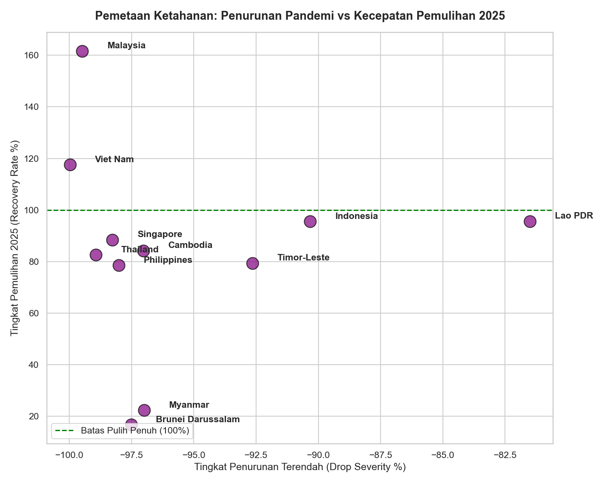

Pemulihan Pariwisata & Resiliensi Makroekonomi ASEAN:
Evaluasi Krisis & Proyeksi 2027
Analisis komputasional empiris terhadap dinamika kunjungan wisatawan internasional, kedalaman kejatuhan pandemi, dan kurva kebangkitan ekonomi regional di Asia Tenggara.
Mendekati baseline 2019 (147.80M)
Kebangkitan dari titik nadir 2021 (2.07%)
Dipimpin oleh Malaysia, Indonesia, & Vietnam
Pertumbuhan +15.0% di atas rekor 2019
Trajektori Kunjungan Wisatawan (2019-2027)
Pilih negara untuk menginspeksi kurva kejatuhan krisis, laju pemulihan, serta garis proyeksi ekonometrika hingga 2027.
Pilih Entitas / Negara untuk Inspeksi Langsung
Garis putus-putus pada grafik mewakili estimasi model peramalan 2026-2027
Komparasi Ketahanan Krisis 10 Negara Anggota
Skor resiliensi dihitung dari kombinasi retensi dasar saat krisis, akselerasi pemulihan tahunan, dan pencapaian rasio terhadap 2019.
Peringkat Skor Resiliensi Regional
Nilai >100 mengindikasikan ketahanan ekonomi di atas rata-rata kawasan
Scatter Plot: Kejatuhan vs Kecepatan Pemulihan
Visualisasi klaster Notebook (Empirical Scatter Analysis 2019-2025)

Kalkulator Proyeksi Dampak Kebijakan Regional
Eksplorasi skenario intervensi: perluasan konektivitas penerbangan, kebijakan bebas visa regional, dan stimulasi devisa wisata.
Tuas Parameter Kebijakan
Proyeksi Nilai Makroekonomi 2027
Kueri Ekonometrika & Analitik Data Warehouse
Skrip SQL baku yang digunakan untuk agregasi data deret waktu, komputasi skor komposit resiliensi, dan batas ketidakpastian.
-- 1. Evaluasi Pertumbuhan Kunjungan Wisatawan per Negara (YoY)
SELECT
country_name,
year_period,
inbound_visitors,
LAG(inbound_visitors, 1) OVER (PARTITION BY country_name ORDER BY year_period) AS prev_year_visitors,
ROUND(((inbound_visitors - LAG(inbound_visitors, 1) OVER (PARTITION BY country_name ORDER BY year_period)) * 100.0) /
LAG(inbound_visitors, 1) OVER (PARTITION BY country_name ORDER BY year_period), 2) AS yoy_growth_pct
FROM asean_tourism_timeseries
WHERE year_period BETWEEN 2019 AND 2025
ORDER BY country_name, year_period;